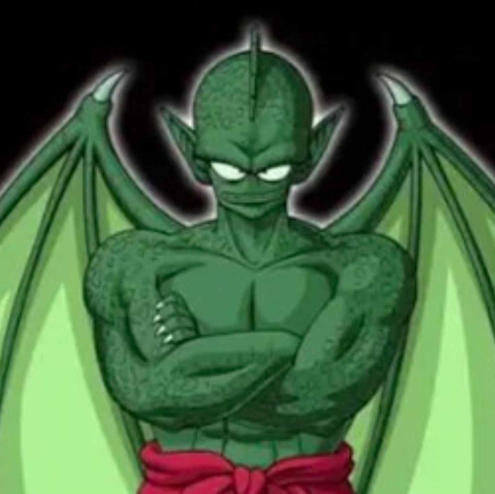

Derivata dall'analisi incrociata di quattro fonti primarie ufficiali — formula verificata sui dati canonici
Anatomia e limitazioni del dispositivo dell'Impero di Freeza — dati verificati con formula canonica
Valori calcolati con BP = (POW+SPD+TGH)÷10 × TEC · Fonte: manga, Bouken Special 1987, tre videogiochi ufficiali
| Personaggio | BP | Life Force | POW | SPD | TGH | TEC |
|---|---|---|---|---|---|---|
| ContadinoUmano | 5 | 3 | 3 | 3 | 4 | 5 |
| Bear BanditBandit | 10 | 12 | 6 | 5 | 6 | 6 [≈10.2] |
| Chi-ChiUmano | 12 | 17 | 7 | 7 | 6 | 6 |
| YamchaUmano | 16 | 27 | 7 | 9 | 7 | 7 |
| Goku — Inizio serieSaiyan | 20 | 30 | 8 | 9 | 8 | 8 |
Il gioco da tavolo del Bouken Special 1987 usa solo Tairyoku e Kogeki-ryoku per semplificare le meccaniche. Tuttavia i valori di Life Force sono coerenti con i videogiochi successivi — prova che esisteva già nel 1987 un sistema interno di reference per le forze dei personaggi. Il contadino con Tairyoku 3 e BP 5 è il benchmark assoluto: essere umano adulto sedentario, zero addestramento marziale. Per confronto: un atleta olimpico avrebbe Life Force ~15, Technique ~9–10, BP ~25–35.
| Personaggio | BP | Life Force | POW | SPD | TGH | TEC |
|---|---|---|---|---|---|---|
|  TambourineDemone | 135 | 80 | 35 | 20 | 35 | 15 |
| CymbalDemone | ~84 | 70 | 25 | 15 | 30 | ~12 |
| Tenshinhan — 22° TenkaichiUmano | 153 | 95 | 32 | 22 | 36 | 17 |
| Goku — 22° TenkaichiSaiyan | 156 | 106 | 38 | 23 | 43 | 15 |
| Piccolo DaimaoDemone | 246 | 150 | 50 | 28 | 45 | 20 |
Tambourine è il personaggio fondamentale per la verifica: appare nel Bouken Special 1987 (Tairyoku 80, Kogeki-ryoku 35) e in tutti e tre i videogiochi con valori coerenti — la prova più solida della consistenza del sistema. Il suo Technique 15 riflette la narrativa: guerriero potente fisicamente ma privo della raffinatezza tecnica dei grandi marzialisti. Tenshinhan (TEC 17) ha Technique superiore a Goku (TEC 15) al 22° Tenkaichi — spiegando come possa batterlo nonostante Power inferiore. Il Technique è la discriminante che Toriyama usa per distinguere i veri marzialisti dai semplici "bruti" forti.
| Personaggio | BP | Life Force | POW | SPD | TGH | TEC |
|---|---|---|---|---|---|---|
| SuiGuardia imp. | 286 | 840 | 115 | 15 | 90 | 13 |
| BananGuardia imp. | 378 | 980 | 140 | 15 | 115 | 13 |
Banan con Power 140 e TGH 115 ma TEC 13: se avesse Technique 20 come Piccolo Daimao, il suo BP sarebbe 540 invece di 378. La Life Force enorme (980) significa che resistono a lungo in combattimento — ma la Technique 13 (la più bassa tra i personaggi rilevanti) azzera l'utilità di tutta quella forza fisica in uno scontro tecnico. Yajirobe li sconfigge nella narrativa nonostante stat fisiche inferiori — esattamente perché la sua Technique è superiore. Questo è il caso più puro di "tecnica vince sulla forza bruta" nella prima serie.
| Personaggio | BP Ufficiale | Life Force | POW | SPD | TGH | TEC |
|---|---|---|---|---|---|---|
| Contadino | 5 | 3 | 3 | 3 | 4 | 5 |
| GokuSaiyan | 416 | ~260 | ~52 | ~40 | ~56 | ~28 |
| PiccoloNamek | 408 | ~255 | ~54 | ~38 | ~50 | ~28 |
| RadditzSaiyan | 1,500 | 1,200 | 128 | 62 | 110 | 50 |
| NappaSaiyan | 4,000 | ~2,500 | ~220 | ~95 | ~205 | ~72 |
| VegetaSaiyan | 18,000 | ~8,000 | ~450 | ~250 | ~400 | ~150 |
| Goku — Kaio-Ken ×4 | 24,000 | critica | ~600 | ~330 | ~470 | ~150 |
| Vegeta — Oozaru | 180,000 | ×10 | stat fisiche ×10 · Technique invariata | |||
Kaio-Ken: moltiplica POW e SPD per il fattore scelto senza alterare Technique. Usa Life Force come carburante — al ×4 la Life Force di Goku crolla a valori critici riducendo il BP effettivo nei turni successivi. Boost immediato + degrado del fattore sopravvivenza: perfettamente coerente con la formula.
Zenkai Boost: dopo ogni quasi-morte, POW + TGH + SPD aumentano permanentemente (fattore 1.5–3.0). Technique aumenta meno — il corpo migliora più velocemente della raffinatezza tecnica. Spiega la crescita esponenziale dei Saiyan vs la progressione lineare degli umani.
Oozaru ×10: moltiplica le tre stat fisiche per 10 esatto. Technique invariata — 180.000 BP grezzo ma nessun aumento nel controllo del Ki. Forma pericolosa ma tecnicamente meno raffinata della forma umana ai massimi livelli.
| Personaggio / Forma | BP Ufficiale | Barra |
|---|---|---|
| Ginyu | 120,000 | |
| Freeza — 1ª Forma | 530,000 | |
| Freeza — Forma Finale 50% | 60,000,000 | |
| Freeza — 100% di Potere | 120,000,000 | |
| Goku — Super Saiyan ★ | 150,000,000+ |
Il Super Saiyan moltiplica le tre stat fisiche per ×50 (Daizenshuu vol. 7). Technique rimane invariata — è un potenziamento fisico puro, non tecnico. BP risultante: (POW×50 + SPD×50 + TGH×50) ÷ 10 × TEC = BP_base × 50. Con Goku base a ~3.000.000 su Namek: 3.000.000 × 50 = 150.000.000. La formula regge. Toriyama abbandona i numeri espliciti proprio qui: il valore diventa talmente grande da perdere senso narrativo per i lettori. Lo scouter che esplode è la metafora perfetta di questo collasso del sistema numerico.
| Personaggio / Forma | BP Stimato | Moltiplicatore |
|---|---|---|
| Cell — Forma Perfetta | ~900,000,000 | DNA composito (Saiyan+Namek+Freeza) |
| Gohan — SSJ2 | ~1,400,000,000 | stat fisiche ×100 + picco emotivo |
| Majin Buu (grasso) | incalcolabile | magia — fuori dalla formula Ki |
| Vegetto SSJ | ∞ stimato | Potara — formula non lineare |
Come la biologia di ogni specie influenza le quattro stat della formula
Come ogni tecnica altera Power, Speed, Toughness, Technique o Life Force
Tutto ciò che non sapevi su Dragon Ball e sulla genesi del sistema Battle Power